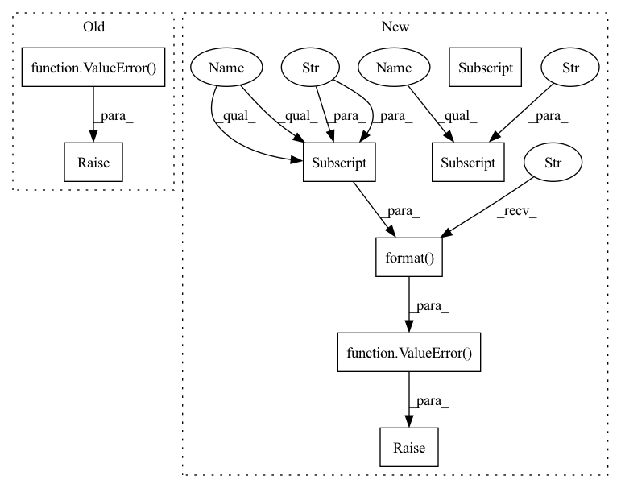

Pattern ID :1859

Before Change
elif self.config["global_pool"] == "sum":
self.global_pool = geometric.global_add_pool
else: // max
raise ValueError("{} pooling is not supported" )
def forward(self, positions):
batch_size = positions.size(0)
n_vertices = positions.size(1)
After Change
// pooling layers
if self.config["graph_pooling"]:
self.gpool_layers = nn.ModuleList()
for _ in range(0, self.config["conv_depth"]):
self.gpool_layers.append(
DynamicTopKPool(self.config["EConv_feature"], k=self.config["k_neighbors"], pool_ratio=self.config["pool_ratio"]))
// global pooling layer based on config
if self.config["global_pool"] == "max":
self.global_pool = geometric.global_max_pool
elif self.config["global_pool"] == "mean":
self.global_pool = geometric.global_mean_pool
elif self.config["global_pool"] == "add":
self.global_pool = geometric.global_add_pool
else: // max
raise ValueError("{} pooling is not supported".format(self.config["global_pool"]))
// Output linear layer
out_features = self.config["EConv_feature"] * self.config["conv_depth"] if self.config["skip_connections"] else self.config["EConv_feature"]
self.lin = nn.Linear(out_features, out_size)
In pattern: SUPERPATTERN
Frequency: 4
Non-data size: 8
Instances
Fragment ID: 4549888
Project Name: maria-korosteleva/garment-pattern-estimation
Commit Name: 58004a47b8e9b3137f4c2616414bb5405d5647ed
Time: 2020-09-24
Author: mariako@kaist.ac.kr
File Name: nn/net_blocks.py
M Class Name: EdgeConvFeatures
N Class Name: EdgeConvFeatures
M Method Name: __init__(3)
N Method Name: __init__(3)
M Parent Class: nn.Module
N Parent Class: nn.Module
M File Name: nn/net_blocks.py
N File Name: nn/net_blocks.py
M Start Line: 127
M End Line: 136
N Start Line: 95
N End Line: 143
'>
Before Change
type="CrossEntropyLoss", use_mask=True, loss_weight=1.0)):
super(FCNMaskHead, self).__init__()
if upsample_method not in [None, "deconv", "nearest", "bilinear"]:
raise ValueError(
"Invalid upsample method {}, accepted methods "
"are "deconv", "nearest", "bilinear"".format(upsample_method))
self.num_convs = num_convs
// WARN: roi_feat_size is reserved and not used
self.roi_feat_size = _pair(roi_feat_size)
self.in_channels = in_channels
After Change
loss_mask=dict(
type="CrossEntropyLoss", use_mask=True, loss_weight=1.0)):
super(FCNMaskHead, self).__init__()
self.upsample_cfg = upsample_cfg.copy()
if self.upsample_cfg["type"] not in [
None, "deconv", "nearest", "bilinear", "carafe"
]:
raise ValueError(
"Invalid upsample method {}, accepted methods "
"are "deconv", "nearest", "bilinear", "carafe"".format(
self.upsample_cfg["type"]))
self.num_convs = num_convs
// WARN: roi_feat_size is reserved and not used
self.roi_feat_size = _pair(roi_feat_size)
self.in_channels = in_channels
'>
Fragment ID: 4549885
Project Name: saic-vul/iterdet
Commit Name: b5431092505f7dcd7de616c8a79eba4d2532fbc8
Time: 2020-02-21
Author: 1155098160@link.cuhk.edu.hk
File Name: mmdet/models/mask_heads/fcn_mask_head.py
M Class Name: FCNMaskHead
N Class Name: FCNMaskHead
M Method Name: __init__(12)
N Method Name: __init__(13)
M Parent Class: nn.Module
N Parent Class: nn.Module
M File Name: mmdet/models/mask_heads/fcn_mask_head.py
N File Name: mmdet/models/mask_heads/fcn_mask_head.py
M Start Line: 23
M End Line: 76
N Start Line: 26
N End Line: 90
'>
Before Change
elif self.config["global_pool"] == "sum":
self.global_pool = geometric.global_add_pool
else: // max
raise ValueError("{} pooling is not supported" )
def forward(self, positions):
batch_size = positions.size(0)
n_vertices = positions.size(1)
After Change
def __init__(self, out_size, config={}):
super().__init__()
self.config = {
"conv_depth": 3,
"k_neighbors": 10,
"EConv_hidden": 64,
"EConv_hidden_depth" : 2,
"EConv_feature": 64,
"EConv_aggr": "max",
"global_pool": "max",
"skip_connections": True,
"graph_pooling": True,
"pool_ratio": 0.5 // only used when the graph pooling is enabled
} // defaults for this net
self.config.update(config) // from input
// MLP Schemes
first_layer_mpl = [2 * 3] + [self.config["EConv_hidden"] for _ in range(self.config["EConv_hidden_depth"])] + [self.config["EConv_feature"]]
other_layers_mpl = ([2 * self.config["EConv_feature"]]
+ [self.config["EConv_hidden"] for _ in range(self.config["EConv_hidden_depth"])] + [self.config["EConv_feature"]])
// Contruct the net
// Conv layers
self.conv_layers = nn.ModuleList()
// first is always there
self.conv_layers.append(
geometric.DynamicEdgeConv(_MLP(first_layer_mpl), k=self.config["k_neighbors"], aggr=self.config["EConv_aggr"]))
for _ in range(1, self.config["conv_depth"]):
self.conv_layers.append(
geometric.DynamicEdgeConv(_MLP(other_layers_mpl), k=self.config["k_neighbors"], aggr=self.config["EConv_aggr"]))
// pooling layers
if self.config["graph_pooling"]:
self.gpool_layers = nn.ModuleList()
for _ in range(0, self.config["conv_depth"]):
self.gpool_layers.append(
DynamicTopKPool(self.config["EConv_feature"], k=self.config["k_neighbors"], pool_ratio=self.config["pool_ratio"]))
// global pooling layer based on config
if self.config["global_pool"] == "max":
self.global_pool = geometric.global_max_pool
elif self.config["global_pool"] == "mean":
self.global_pool = geometric.global_mean_pool
elif self.config["global_pool"] == "add":
self.global_pool = geometric.global_add_pool
else: // max
raise ValueError("{} pooling is not supported".format(self.config["global_pool"]))
// Output linear layer
out_features = self.config["EConv_feature"] * self.config["conv_depth"] if self.config["skip_connections"] else self.config["EConv_feature"]
self.lin = nn.Linear(out_features, out_size)
'>
Fragment ID: 4549884
Project Name: maria-korosteleva/garment-pattern-estimation
Commit Name: 58004a47b8e9b3137f4c2616414bb5405d5647ed
Time: 2020-09-24
Author: mariako@kaist.ac.kr
File Name: nn/net_blocks.py
M Class Name: EdgeConvFeatures
N Class Name: EdgeConvFeatures
M Method Name: __init__(3)
N Method Name: __init__(3)
M Parent Class: nn.Module
N Parent Class: nn.Module
M File Name: nn/net_blocks.py
N File Name: nn/net_blocks.py
M Start Line: 127
M End Line: 136
N Start Line: 95
N End Line: 143
'>
Before Change
elif self.custom_config["model_arch_args"]["core_arch"] == "lstm":
self.rnn = nn.LSTM(input_dim, self.hidden_state_size, batch_first=True)
else:
raise ValueError()
// action branch and value branch
self.action_branch = nn.Linear(self.hidden_state_size, num_outputs)
self.value_branch = nn.Linear(self.input_dim, 1)
After Change
name)
// judge the model arch
self.custom_config = model_config["custom_model_config"]
self.full_obs_space = getattr(obs_space, "original_space", obs_space)
self.n_agents = self.custom_config["num_agents"]
if "encode_layer" in self.custom_config["model_arch_args"]:
encode_layer = self.custom_config["model_arch_args"]["encode_layer"]
encoder_layer_dim = encode_layer.split("-")
encoder_layer_dim = [int(i) for i in encoder_layer_dim]
else: // default config
encoder_layer_dim = []
for i in range(self.custom_config["model_arch_args"]["fc_layer"]):
out_dim = self.custom_config["model_arch_args"]["out_dim_fc_{}".format(i)]
encoder_layer_dim.append(out_dim)
self.encoder_layer_dim = encoder_layer_dim
self.activation = model_config.get("fcnet_activation")
// encoder
layers = []
if "fc_layer" in self.custom_config["model_arch_args"]:
self.obs_size = self.full_obs_space["obs"].shape[0]
input_dim = self.obs_size
for out_dim in self.encoder_layer_dim:
layers.append(
SlimFC(in_size=input_dim,
out_size=out_dim,
initializer=normc_initializer(1.0),
activation_fn=self.activation))
input_dim = out_dim
elif "conv_layer" in self.custom_config["model_arch_args"]:
self.obs_size = self.full_obs_space["obs"].shape
input_dim = self.obs_size[2]
for i in range(self.custom_config["model_arch_args"]["conv_layer"]):
conv_f = nn.Conv2d(
in_channels=input_dim,
out_channels=self.custom_config["model_arch_args"]["out_channel_layer_{}".format(i)],
kernel_size=self.custom_config["model_arch_args"]["kernel_size_layer_{}".format(i)],
stride=self.custom_config["model_arch_args"]["stride_layer_{}".format(i)],
padding=self.custom_config["model_arch_args"]["padding_layer_{}".format(i)],
)
relu_f = nn.ReLU()
pool_f = nn.MaxPool2d(kernel_size=self.custom_config["model_arch_args"]["pool_size_layer_{}".format(i)])
layers.append(conv_f)
layers.append(relu_f)
layers.append(pool_f)
input_dim = self.custom_config["model_arch_args"]["out_channel_layer_{}".format(i)]
else:
raise ValueError()
self.input_dim = input_dim
// obs encoder
self.encoder = nn.Sequential(
*layers
)
self.vf_encoder = nn.Sequential(
*layers
)
// core rnn
self.hidden_state_size = self.custom_config["model_arch_args"]["hidden_state_size"]
if self.custom_config["model_arch_args"]["core_arch"] == "gru":
self.rnn = nn.GRU(input_dim, self.hidden_state_size, batch_first=True)
elif self.custom_config["model_arch_args"]["core_arch"] == "lstm":
self.rnn = nn.LSTM(input_dim, self.hidden_state_size, batch_first=True)
else:
raise ValueError(
"should be either gru or lstm, got {}".format(self.custom_config["model_arch_args"]["core_arch"]))
// action branch and value branch
self.action_branch = nn.Linear(self.hidden_state_size, num_outputs)
self.value_branch = nn.Linear(self.input_dim, 1)
'>
Fragment ID: 4549886
Project Name: replicable-marl/marllib
Commit Name: 229bfd1c9db33d2ff0761dbdbe21e47a47a9b87c
Time: 2023-02-23
Author: hhhusiyi@163.com
File Name: marllib/marl/models/zoo/rnn/base_rnn.py
M Class Name: Base_RNN
N Class Name: Base_RNN
M Method Name: __init__(6)
N Method Name: __init__(6)
M Parent Class: TorchRNN,nn.Module
N Parent Class: TorchRNN,nn.Module
M File Name: marllib/marl/models/zoo/rnn/base_rnn.py
N File Name: marllib/marl/models/zoo/rnn/base_rnn.py
M Start Line: 39
M End Line: 86
N Start Line: 34
N End Line: 105